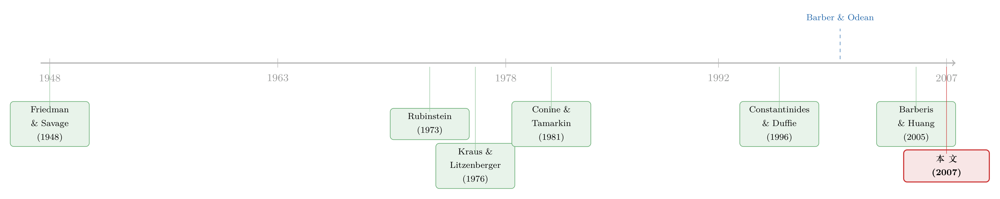

为什么有人甘愿「不分散」？——把彩票心理写进资产定价
本文读的是 Mitton & Vorkink (2007, Review of Financial Studies)：他们构造了一个投资者「偏度偏好异质」的单期均衡模型，证明只要有一部分人额外偏好正偏度，他们就会在均衡里【主动】持有不分散的组合，而且特质偏度 (idiosyncratic skewness)——不只是协偏度——会被定价；再用 6 万个散户账户的数据验证：欠分散的人确实换来了更高的偏度，他们挑的也确实是偏度更高的股票。
1 一个老问题：投资者为什么「不肯」分散
先抛一个几乎所有金融学第一节课都会讲、却几乎没人真信自己做到的事实：大多数散户的组合，股票数量远远不够分散掉特质风险。Blume and Friend (1975)、Kelly (1995)、Odean (1999)、Goetzmann and Kumar (2004) 一篇接一篇地记录下这件事——人们手里常常只有三五只股票。
在均值-方差 (mean-variance) 的世界里，这是个不折不扣的谜。标准组合理论说得很清楚：你多承担的那部分特质波动，市场【一分钱都不会补偿你】。Statman (1987)、Meulbroek (2005) 还真把这笔账算了出来——欠分散的人，在风险-收益的权衡上确实吃了亏。
于是一个自然的反问冒出来：既然吃亏，他们为什么还这么干？
主流的回答几乎都往「行为偏差」上靠：过度自信（Odean, 1999）、熟悉度偏误（Grinblatt and Keloharju, 2001）、不够老练、财富不足（Goetzmann and Kumar, 2004）。这些解释都有道理，但它们都暗含一个前提——投资者在犯错。
这篇论文想讲的，是另一种可能：他们也许没犯错，只是你用错了尺子。
2 两难：分散是一把双刃剑
真正关键的一步，是把第三个矩——偏度 (skewness)——请进效用函数。
直觉其实很朴素。一个高度正偏的收益分布，意味着「大概率小亏、小概率暴赚」，这恰恰是一张彩票的形状。Arditti (1967)、Scott and Horvath (1980) 在相当一般的条件下证明：投资者偏好正偏度。而 Simkowitz and Beedles (1978)、Conine and Tamarkin (1981) 进一步指出——一旦你在乎第三个矩，分散就成了一把双刃剑：
分散化消灭了你不想要的方差，但同时也消灭了你想要的偏度。
把单只彩票股扔进一个一百只股票的篮子里，它那条诱人的右尾就被稀释得无影无踪了。所以，一个看重右尾的人，会理性地选择少持有几只、把偏度留在组合里。于是那些在「均值-方差-偏度」框架下完全有效的组合，单用均值-方差去评判时，就会显得「无效」。
但故事到这里还差一口气。Conine and Tamarkin (1981) 用比较静态 (comparative statics) 做出了带偏度偏好的需求函数，确实能导出「只含少数股票」的最优组合——可那只是单个投资者的局部分析。Rubinstein (1973) 早就泼过一盆冷水：如果所有人都有同样的立方效用（同样偏好偏度），那么在均衡里，大家还是会回到充分分散的组合上去。
换句话说：偏度偏好本身，并不足以在均衡里产生「不分散」。
3 反转：让偏度偏好「异质」起来
这篇论文真正的贡献，是把 Rubinstein 的那盆冷水接住，然后改了一个字：异质 (heterogeneous)。
作者的招数干净利落——让两类投资者对均值和方差的偏好完全一样，唯独对偏度的偏好不同。第一类叫「传统投资者 (Traditional Investor)」，是教科书里的二次效用 (quadratic utility)；第二类叫「彩票投资者 (Lotto Investor)」，在均值-方差之外，额外加上一项对偏度的偏好。
正是这一点点异质，打破了 Rubinstein 的「同质代理人必须持有相同组合」的均衡——市场出清不再要求人人手里捧着市场组合。彩票投资者会去【超配】那只偏度高的股票，传统投资者则相应地多拿那两只「老实」的股票。两个人都欠分散了，但欠的方式、欠的程度都不一样。
4 模型：把偏度装进效用函数
我们一步步把模型拆开。经济里有三只风险资产 \(R=[R_1,R_2,R_3]\)，外加一只无风险债券，利率为 \(r\)；风险资产的协方差矩阵记为 \(V\)。两类投资者的效用如下。
传统投资者只在乎前两个矩：
$$U(W)=E(W)-\frac{1}{2\tau}\,\mathrm{Var}(W)$$
其中 \(\tau>0\) 是风险厌恶系数。彩票投资者对均值、方差的偏好与之完全相同，但多了一项偏度：
$$U(W)=E(W)-\frac{1}{2\tau}\,\mathrm{Var}(W)+\frac{1}{3\phi}\,\mathrm{Skew}(W)$$
这里 \(\phi>0\) 是治理偏度偏好的系数，\(\phi\) 越小，对正偏度的渴望越强。这个设定有个漂亮的边界性质：当 \(\phi\to\infty\) 时，偏度项消失，彩票投资者退化为二次效用，整个模型回到 Markowitz (1959) 的均值-方差世界——也就是说，经典均衡是本模型的一个特例。
记 \(X_j=[x_{j,1},x_{j,2},x_{j,3}]\) 为投资者 \(j\) 投在三只风险资产上的金额，期末财富为
$$W_j=W_{0,j}(1+r)+X_j^{\top}(R-r\mathbf{1})$$
对传统投资者，最大化效用得到熟悉的均值-方差需求：
$$X_T=\tau V^{-1}(R-r)$$
这就是导出 CAPM 的那条需求函数。对彩票投资者，麻烦就来了——偏度项让一阶条件 (first-order condition, FOC) 变成非线性的：
这里的 \(M_1,M_2,M_3\) 是装着偏度元素的矩阵，其一般元素为
$$M_{ijk}=E\big[(R_i-\bar R_i)(R_j-\bar R_j)(R_k-\bar R_k)\big]$$
三类元素各有含义：\(M_{iii}\) 是资产 \(i\) 自己的特质偏度；\(M_{iij}\) 是资产 \(i\)、\(j\) 的曲线交互；\(M_{ijk}\) 是三资产的三重积矩（也就是通常说的协偏度的来源）。
看懂 a2 这一项，就看懂了全文。注意它里面带着 \(X_L\)——偏度需求取决于你已经持有的仓位。这就是为什么 FOC 是非线性的、一般没有解析解；也正是这个非线性，让「集中持有某只股票」成了一个自洽的最优选择，而不是被无风险资产或共同基金定理 (mutual fund theorem) 抹平。
为了把均衡算出来，作者做了一个关键简化：只让资产 2 有偏度，即设 \(M_{ijk}=0\)，除了 \(i=j=k=2\) 的情形。这等于把协偏度统统关掉，单独放大「特质偏度」这一个通道，看它究竟能对持仓和价格做什么。参数取自 Campbell et al. (2001) 的战后美股数据：\(\tau=2.5\)，资产 2 被赋予最高方差（因为偏度和方差天然正相关——高偏度的股票往往也是高波动的）。
算出来是什么？ 当 \(\phi=2.5\)、资产 2 的偏度为正时，两个人都欠分散，而彩票投资者尤其极端：在偏度高达 \(0.35\) 的情形下，资产 2 占到了彩票投资者组合的约 50%。相比之下，传统投资者也会偏离均等权重，但温和得多——他的组合方差只比分散组合高出不到 2%，而彩票投资者的组合方差则高出 20% 以上。
更要紧的是价格。在这个均衡里，资产 2 的预期超额收益随它的特质偏度上升而显著下降。这是对 Kraus and Litzenberger (1976) 的直接推广——后者认为只有协偏度 (coskewness) 才会被定价，而这里，纯粹的特质偏度也进了价格。代价是 Sharpe 比率：当资产 2 偏度为 \(0.35\) 时，彩票投资者愿意持有一个 Sharpe 比率比传统投资者低 20% 以上的组合（0.14 vs 0.17）。他用 Sharpe 比率，换偏度。
这个「特质偏度被定价」的结论，和 Barberis and Huang (2005) 殊途同归——但路径不同：后者靠的是累积前景理论 (cumulative prospect theory) 里对尾部概率的高估，本文靠的则是更传统的偏好结构加上偏度偏好的异质性。（关于「彩票心理」如何同时驱动买彩票与买保险，可参见《赌博的四季》；关于偏度作为定价因子，可参见《市场的下一步，藏在一万只股票的「歪斜」里》。）
5 数据与三个验证
光有模型不够。作者搬来了 Barber and Odean (2000) 用过的那套经典数据：一家大型折扣券商 60,000 个散户账户，样本期 1991–1996。模型导出三个可检验的含义，逐一验证。
含义一：欠分散的人，确实捕获了更多偏度。 把投资者按持股分散程度分组，比较他们组合收益的偏度。结果是「分散组几乎没有偏度，欠分散组有大量正偏度」。最直观的一个数字：在 3 年的收益排名里，最顶端 1% 的投资者中，欠分散者与充分分散者的比例是 26 比 1。换句话说，要想跻身赢家榜首，你几乎必须不分散——因为只有右尾够长，才有机会摸到那个极端高收益。这正是偏度偏好者被欠分散组合吸引的理由。
含义二：欠分散看似无效，其实是在拿 Sharpe 换偏度。 作者发现，组合的偏度系数随 Sharpe 比率的下降而上升——欠分散者在偏度上拿到了一份稳定的补偿，至少部分地抵消了均值-方差上的损失。更关键的是，回归分析显示：即便控制了分散程度本身，Sharpe 与偏度之间的这种权衡依然存在；而且这种负相关，对特质偏度比对协偏度更强。这说明欠分散不是「为别的原因不分散、顺手得到了偏度」，而是有意识地在交易。
含义三：他们挑的，本就是偏度高的股票。 这是最直接的「动机」检验。看投资者组合里【单只股票】的特征：最不分散的那批投资者最常选的股票，其偏度系数大约是分散投资者最常选股票的两倍。两倍。这意味着他们不是随手抓了几只股票，而是刻意挑了那些最可能拉高组合偏度的票。
作为一个有趣的旁注，作者还发现：更年轻、男性、更不富裕的投资者，偏度偏好最强——这与 Barber and Odean (2001) 关于「男孩终归是男孩」的过度自信叙事，以及彩票需求的人口学特征都对得上。
6 文献脉络
这条线索可以一路追到 Friedman and Savage (1948)——他们用一条「先凹后凸」的效用曲线，解释了为什么同一个人既买保险又买彩票。偏度偏好的种子就埋在那里。

接着，Arditti (1967)、Scott and Horvath (1980) 把「偏好高阶矩」做成了严格的命题；Kraus and Litzenberger (1976) 则把偏度搬进资产定价，给出了协偏度被定价的代表性代理人结论——这是「偏度定价」的第一座里程碑。然后，Simkowitz and Beedles (1978) 与 Conine and Tamarkin (1981) 把视线转向持仓：他们论证，在三矩世界里，欠分散可能是最优的。但 Rubinstein (1973) 指出，同质偏好下均衡仍是分散的——这道坎挡了二十多年。
与此同时，异质投资者模型在资产定价的另一条战线上节节胜利：Constantinides and Duffie (1996)、Telmer (1993)、Heaton and Lucas (1995) 证明，引入异质性能解释代表性代理人模型解释不了的现象。本文恰恰是把「异质性」这把钥匙，插进了「偏度偏好」这把锁——它把 Conine and Tamarkin (1981) 的局部比较静态推到了均衡，把 Kraus and Litzenberger (1976) 的协偏度定价扩展到了特质偏度定价。在更晚近的同行里，它与 Barberis and Huang (2005) 互为镜像，也与 Goetzmann and Kumar (2004)、Polkovnichenko (2005)、Shefrin and Statman (2000) 关于「上行潜力驱动欠分散」的解释彼此呼应、互不排斥。
7 评论与延伸（Q&A + 研究方向）
(a) 几个可能的疑问
Q：这和 Barberis-Huang (2005) 的「股票即彩票」到底差在哪？
差在偏度从哪里来。Barberis-Huang 让偏好本身（累积前景理论）去高估尾部概率，哪怕底层分布对称也能造出「彩票感」；本文的偏好更传统，靠的是底层分布真实存在的偏度加上偏好的异质性。两者预测相近（特质偏度被定价），但机制不同，因而可被实证区分。
Q：「异质」这一步真有那么关键吗，还是只是技术性假设？
关键到决定生死。Rubinstein (1973) 已证明：同质偏度偏好下，均衡仍是充分分散的。所以「不分散」无法从偏度偏好本身导出，必须靠投资者间偏好的差异才能在市场出清时产生分化的持仓。这不是技术性润色，而是整篇论文的支点。
Q：把协偏度全关掉、只留特质偏度，是不是把结论「设计」出来了？
这是最该警惕的地方。作者坦承这是为了隔离特质偏度通道而做的简化，并在未报告的结果里放开协偏度，称结论与 Kraus-Litzenberger、Harvey-Siddique 类似。但「只有资产 2 有偏度」确实让模型里组合偏度等价于单只股票偏度，读者应把数值解理解为机制演示，而非一般化的定量预测。
Q：实证里的「相关」会不会其实是「反向」——是欠分散导致了高偏度，而非偏度偏好导致了欠分散？
这正是含义三要堵的漏洞。如果只是「碰巧」不分散、顺带得到偏度，那么欠分散者选的【个股】不该系统性地更偏。但数据显示他们选的股票偏度是别人的两倍，这指向有意识的选择而非副产品。当然，这仍是相关证据，缺一个外生冲击。
Q：偏度偏好者「理性」吗？他们是不是只是没算清楚？
在本模型里，他们完全理性——在均值-方差-偏度框架下持有有效组合，只是用均值-方差这把窄尺子去量时显得无效。这正是论文最有力的叙事：把「错误」重新解读为「目标函数里多了一项」。但模型无法排除真实世界里偏差与偏好并存，二者并不互斥。
Q：特质偏度被定价，对 CAPM 意味着什么？
意味着 CAPM 会系统性地「定错」高特质偏度的股票：当特质偏度为正时，其实际预期收益低于 CAPM 预测（投资者愿意为右尾付溢价）。这与后来「彩票型股票低收益」「特质波动率之谜」一脉相承，把异象的一部分归到了三阶矩上。
(b) 几个可能的研究问题与提案
1. 把「偏度换 Sharpe」搬到公司债市场。 【经济故事】公司债的收益分布天然左偏（小概率违约造成大亏损），与股票的右偏正相反。那么「偏度偏好」会不会让某类投资者回避高违约尾部、从而压低低偏度（更左偏）债券的价格？特质偏度是否在信用利差里被定价？ 【可行性】中。数据可用 TRACE 成交 + Mergent FISD 构造债券层面的特质偏度，资产定价回归控制久期、评级、流动性。难点在于债券偏度估计需要足够的成交频率，低流动性债券噪声大；识别上更偏「定价检验」而非因果。
2. 外资持有人是不是「偏度厌恶」的边际投资者？ 【经济故事】若本地散户偏好右尾、外资机构偏好稳健，那么外资持股比例高的市场/个股，其特质偏度溢价应当更弱。这把「谁是边际投资者」与「偏度定价」连了起来。 【可行性】中。可用各国可投资度 (investability) 变化或指数纳入作为外资冲击的准外生来源，配合个股偏度做 DiD。难点是外资偏好需间接推断，且偏度与外资偏好可能同时受公司基本面驱动。（思路上与《外资真是「蝗虫」吗？》的识别策略可互相借鉴。）
3. 用券商宕机/交易中断做一次「偏度偏好」的准实验。 【经济故事】本文是相关证据，缺外生冲击。若某类散户因平台中断被迫离场，他们持有的高特质偏度股票的需求压力应短暂消失，价格与隐含偏度随之变动——这能把「偏度需求」从「偏度供给」里剥出来。 【可行性】中偏低。需要高频持仓/订单数据与已知的中断事件（参考散户宕机类研究的设计）。难点是中断往往同时影响多类投资者，需证明被影响者确实是偏度偏好者。
4. 偏度偏好的人口学异质性能否预测组合的「灾难脆弱性」？ 【经济故事】年轻、男性、低财富者偏度偏好最强、最不分散。在系统性下行（如 2008、2020 三月）中，他们的组合是否承受了不成比例的损失？这把「偏好」连到了「家庭财富的尾部风险」。 【可行性】高（若有面板账户数据）。用账户级持仓 + 危机窗口收益，按人口学分组比较回撤。数据是主要瓶颈，但方法直接、识别清晰。
5. 特质偏度溢价的时变性：它在「赌性」高涨的年份更贵吗？ 【经济故事】若偏度溢价来自异质偏好，那么当市场整体「赌性」上升（IPO 热、彩票成交量高、散户参与度高）时，高特质偏度股票应被推得更贵、未来收益更低。 【可行性】高。用 Average skewness、散户参与度、彩票销量等作为「赌性」代理，与特质偏度溢价做时间序列交互。难点在区分「情绪」与「偏好」两种解释，但本身是可执行的预测性检验。
8 我的判断
这篇论文最漂亮的地方，是用一处极小的改动——把偏度偏好从「同质」改成「异质」——就把一个看似行为偏差的现象，重新讲成了一个理性均衡的故事，并且顺手把「特质偏度被定价」从代表性代理人模型的禁区里解放了出来。它的理论贡献清晰、边界条件干净（\(\phi\to\infty\) 退回 Markowitz），实证三件套也环环相扣，尤其是含义三（挑的就是高偏度股票）有力地堵住了「偏度只是副产品」的反驳。
但我对识别仍有两点保留。其一，模型为了得到数值解，把协偏度整个关掉、只留一只偏度资产，这让定量结论更像「机制演示」而非可外推的预测；真实组合里特质偏度与协偏度纠缠在一起，二者的相对重要性在这套框架里没有被回答。其二，实证全是横截面相关：偏度偏好与欠分散、与选股偏度同向，但缺一个外生冲击去切断「偏好→行为」与「行为→偏度」之间可能的反向通道——论文自己也清楚这点，只能靠含义三间接逼近。
往后我最想看到的，是把这套逻辑搬出股票、搬进信用市场：公司债的左偏分布提供了一个天然的「反向实验室」，如果偏度偏好真的普适，那它在违约尾部的定价应当留下可观测的痕迹；以及，用一次真正外生的需求冲击（平台中断、指数纳入、外资开放），把「偏度需求」从价格里干净地解出来。那时我们才能说，这究竟是一种被定价的偏好，还是一个被讲圆了的故事。
参考文献
- Arditti, F. (1967). Risk and the Required Return on Equity. Journal of Finance 22, 19–36.
- Barber, B., and T. Odean (2000). Trading is Hazardous to Your Wealth: The Common Stock Investment Performance of Individual Investors. Journal of Finance 55, 773–806.
- Barber, B., and T. Odean (2001). Boys Will Be Boys: Gender, Overconfidence, and Common Stock Investment. Quarterly Journal of Economics 116, 261–292.
- Barberis, N., and M. Huang (2005). Stocks As Lotteries: The Implications of Probability Weighting for Security Prices. Working paper, Yale University.
- Blume, M., and I. Friend (1975). The Asset Structure of Individual Portfolios and Some Implications for Utility Functions. Journal of Finance 30, 585–603.
- Campbell, J., M. Lettau, B. Malkiel, and Y. Xu (2001). Have Individual Stocks Become More Volatile? An Empirical Exploration of Idiosyncratic Risk. Journal of Finance 56, 1–43.
- Cass, D., and J. Stiglitz (1970). The Structure of Investor Preferences and Asset Returns, and Separability in Portfolio Allocation. Journal of Economic Theory 2, 122–160.
- Conine, T., and M. Tamarkin (1981). On Diversification Given Asymmetry in Returns. Journal of Finance 36, 1143–1155.
- Constantinides, G., and D. Duffie (1996). Asset Pricing with Heterogeneous Consumers. Journal of Political Economy 104, 219–240.
- Friedman, M., and L. Savage (1948). The Utility Analysis of Choices Involving Risk. Journal of Political Economy 56, 279–304.
- Goetzmann, W., and A. Kumar (2004). Why Do Individual Investors Hold Under-Diversified Portfolios? Working paper, Yale University.
- Grinblatt, M., and M. Keloharju (2001). How Distance, Language, and Culture Influence Stockholdings and Trades. Journal of Finance 56, 1053–1073.
- Harvey, C., and A. Siddique (2000). Conditional Skewness in Asset Pricing Tests. Journal of Finance 55, 1263–1295.
- Heaton, J., and D. Lucas (1995). The Importance of Investor Heterogeneity and Financial Market Imperfections for the Behavior of Asset Prices. Carnegie-Rochester Conference Series on Public Policy 42, 1–32.
- Kelly, M. (1995). All Their Eggs in One Basket: Portfolio Diversification of US Households. Journal of Economic Behavior and Organization 27, 87–96.
- Kraus, A., and R. Litzenberger (1976). Skewness Preference and the Valuation of Risky Assets. Journal of Finance 31, 1085–1100.
- Meulbroek, L. (2005). Company Stock in Pension Plans: How Costly Is It? Journal of Law and Economics 48, 443–474.
- Mitton, T., and K. Vorkink (2007). Equilibrium Underdiversification and the Preference for Skewness. Review of Financial Studies 20(4), 1255–1288.
- Odean, T. (1999). Do Investors Trade Too Much? American Economic Review 89, 1279–1298.
- Polkovnichenko, V. (2005). Household Portfolio Diversification: A Case for Rank-dependent Preferences. Review of Financial Studies 18, 1467–1502.
- Rubinstein, M. (1973). The Fundamental Theorem of Parameter-Preference Security Valuation. Journal of Financial and Quantitative Analysis 8, 61–69.
- Scott, R., and P. Horvath (1980). On the Direction of Preference for Moments of Higher Order than the Variance. Journal of Finance 35, 915–919.
- Shefrin, H., and M. Statman (2000). Behavioral Portfolio Theory. Journal of Financial and Quantitative Analysis 35, 127–151.
- Simkowitz, M., and W. Beedles (1978). Diversification in a Three-moment World. Journal of Financial and Quantitative Analysis 13, 927–941.
- Statman, M. (1987). How Many Stocks Make a Diversified Portfolio? Journal of Financial and Quantitative Analysis 22, 353–363.
- Telmer, C. (1993). Asset-pricing Puzzles and Incomplete Markets. Journal of Finance 48, 1803–1832.